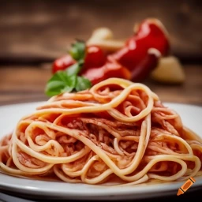

Spaghetti carbonara
Składniki:
400g spaghetti
200g pancetty lub bekonu, pokrojonego w kostkę
4 duże żółtka
100g śmietany kremówki (opcjonalnie)
100g świeżego startego parmezanu
2 łyżki oliwy z oliwek
2 ząbki czosnku, posiekane
Sól i pieprz do smaku
Szczypta świeżo startego muszkatołowca (opcjonalnie)
Posiekana natka pietruszki do dekoracji (opcjonalnie)
Instrukcje:
W dużym garnku zagotuj osoloną wodę. Wrzuć spaghetti i gotuj według instrukcji na opakowaniu, aż będzie al dente.
W dużym rondlu rozgrzej oliwę z oliwek na średnim ogniu. Dodaj pokrojoną pancettę lub bekon i smaż, aż będzie chrupiący i lekko zrumieniony. Dodaj posiekany czosnek i smaż przez około minutę, aż będzie aromatyczny.
W misce wymieszaj żółtka jaj, śmietanę (jeśli używasz) oraz połowę startego parmezanu. Dopraw do smaku solą, pieprzem i muszkatołowcem.
Gdy spaghetti będzie gotowe, odcedź je, ale zachowaj około 1/2 szklanki wody z gotowania.
Przełóż odcedzone spaghetti do rondla z pancettą i czosnkiem. Zmniejsz ogień na najniższy stopień.
Dodaj mieszankę żółtek i śmietany do spaghetti i natychmiast wymieszaj, aż wszystkie nitki będą równomiernie pokryte sosem. Dodaj trochę wody z gotowania, jeśli sos jest zbyt gęsty.
Podawaj na talerzach, posyp resztą startego parmezanu i posiekaną natką pietruszki do dekoracji. Natychmiast podawaj, aby zachować kremową konsystencję sosu.